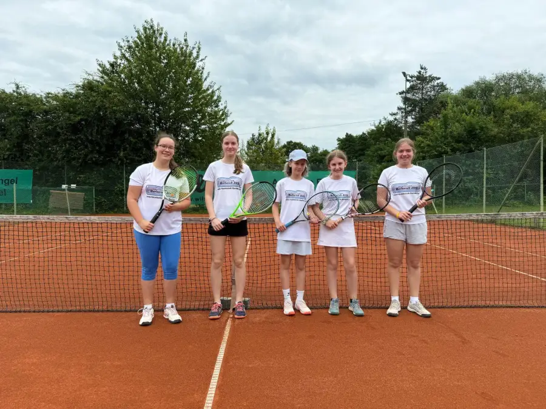
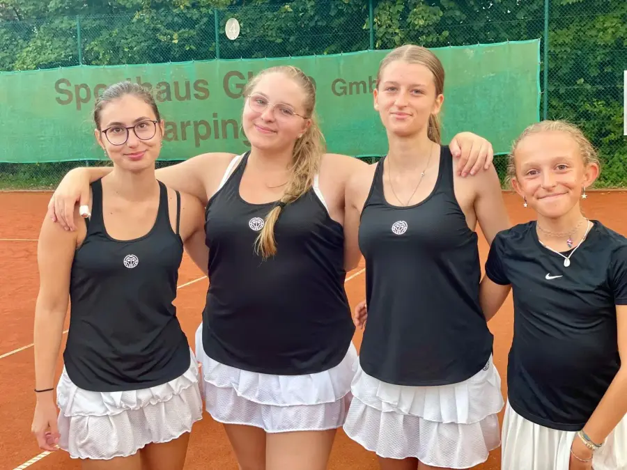
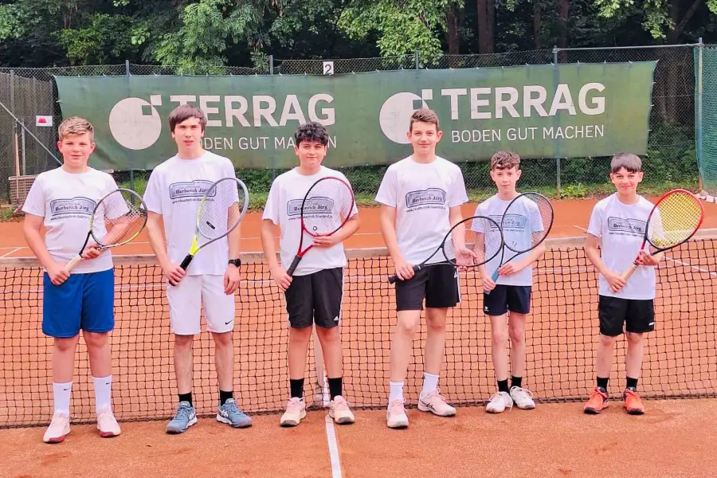
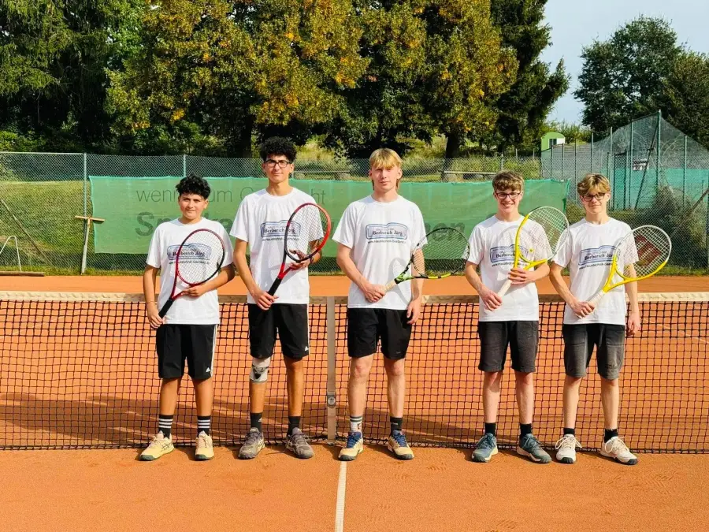
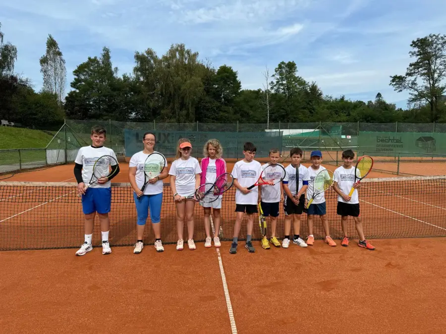
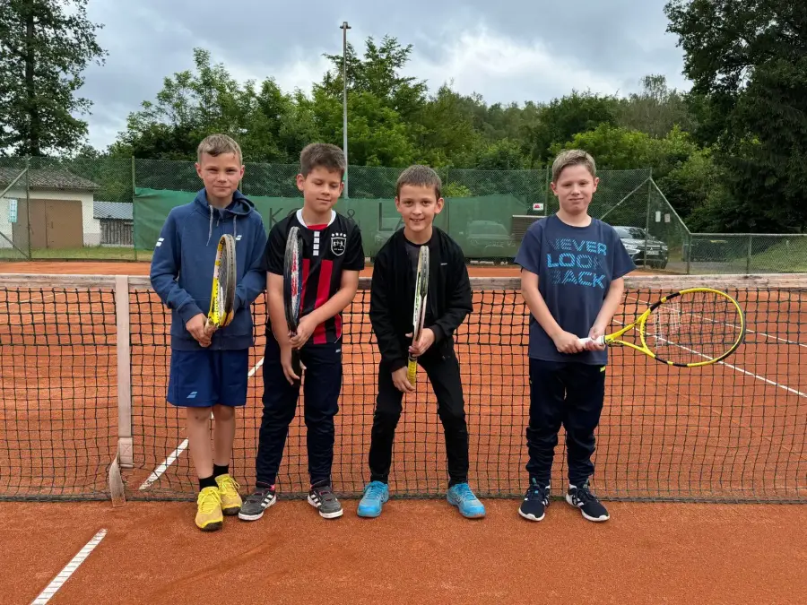

Aktuell trainieren 35 Kinder und Jugendliche zwischen 5 und 15 Jahren bei uns, betreut von der Tennisschule Network. Sechs Teams sind gemeldet. Hier siehst du sie alle.
Landesliga-Meister 2026
U15 Juniorinnen
Meister der LandesligaLandesligaVierermannschaft
Spielgemeinschaft mit Stennweiler, Landsweiler und Reden.
Auf dem Foto, von links nach rechts
Dana Krapf
Clara Weinmann
Emma Rothfuchs
Joelle Scheuer
Emila Wolf
Es fehlen: Tabea Arndt

U15 Juniorinnen im Team
LandesligaVierermannschaft
Spielgemeinschaft mit Stennweiler, Landsweiler und Reden.
Auf dem Foto, von links nach rechts
Joëlle Scheuer
Emilia Clohs (SG)
Clara Weinmann (SG)
Tabea Arndt (SG)
Ariana Biehl (SG)
Es fehlen: Jana Wolf

U18 Juniorinnen
A-KlasseVierermannschaft
Spielgemeinschaft mit Stennweiler, Landsweiler und Reden.
Auf dem Foto, von links nach rechts
Sienna Fuchs
Clara Denne
Marie Spreuer
Jette Latz

U15 Junioren
LandesligaVierermannschaft
Spielgemeinschaft mit Stennweiler, Landsweiler und Reden.
Auf dem Foto, von links nach rechts
Mika Becker
Alexander Omlor
Eliseo Frisino
Maximilian Kober
Lukas Arzt
Julian Hubertus

U18 Junioren
A-KlasseVierermannschaft
Spielgemeinschaft mit Stennweiler, Landsweiler und Reden.
Auf dem Foto, von links nach rechts
Eliseo Frisino
Eliano Frisino
Maxi Speicher
Liam Brill
James Brill

Bambini
Bambini 1A-Klasse
Spielgemeinschaft mit Stennweiler, Landsweiler und Reden.
Auf dem Foto, von links nach rechts
Mika Becker
Joëlle Scheuer
Tabea Arndt (SG)
Clara Weinmann (SG)
Jonas Hennes
Raphael Krüger
Maxim Becker
Henri Scheuer
Julian Hubertus

Midfield
A-KlasseVierermannschaft
Auf dem Foto, von links nach rechts
Raphael Krüger
Maxim Becker
Henri Scheuer
Jonathan Hoffmann
Es fehlen: Maxim Minch und Jonas Hennes
Du willst dabei sein?
Wir suchen immer Spielerinnen und Spieler, vom Kind bis zur Altersklasse 65.
 Landesliga-Meister 2026
Landesliga-Meister 2026